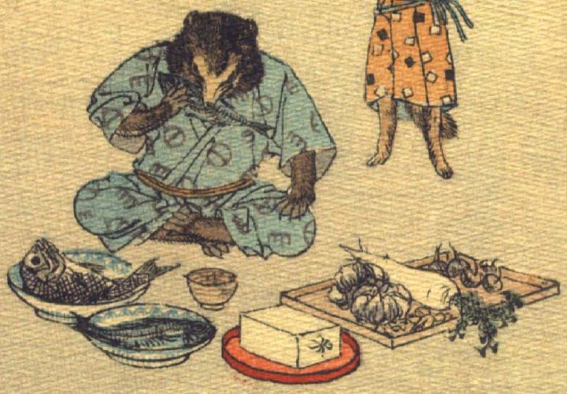

狸。柄の入った空色の着物をまとい、あぐらをかいて座っている。左前脚を膝に置き、右前脚で魚をつかんでかぶりついている。狸の前の床に、茶碗、皿に盛った魚、朱色の盆に載った豆腐、長方形の盆に載った大根などの野菜が置かれている。
著作者：J.Dautremer／出典：親書誌：U426_nichibunken_0120：La victoire du petit renard／日付：2006／資源識別子：U426_nichibunken_0120_0010_0001
Copyright (c)2010- International Research Center for Japanese Studies, Kyoto, Japan. All rights reserved.